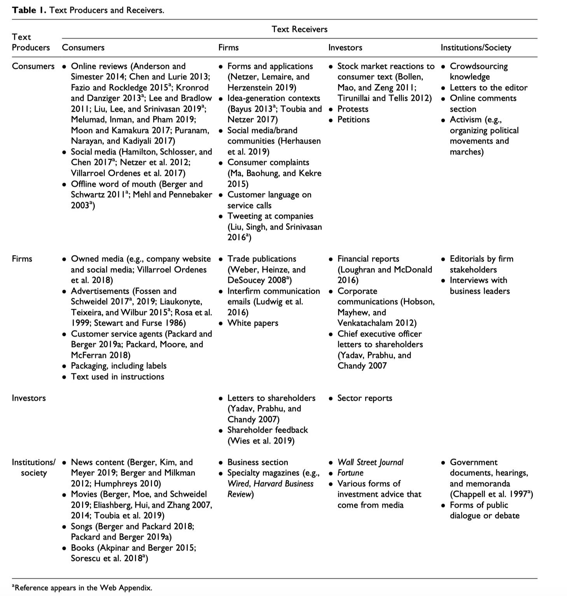
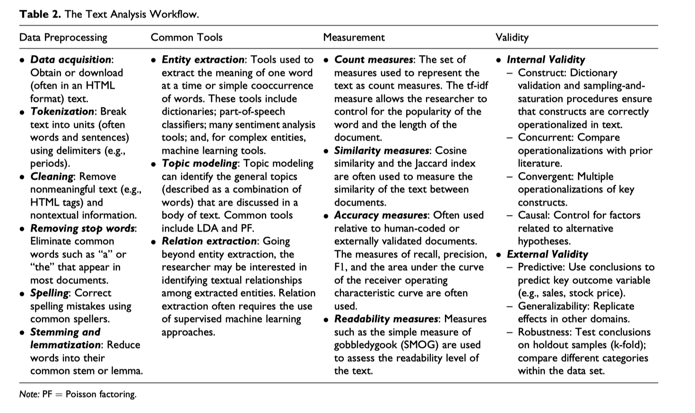
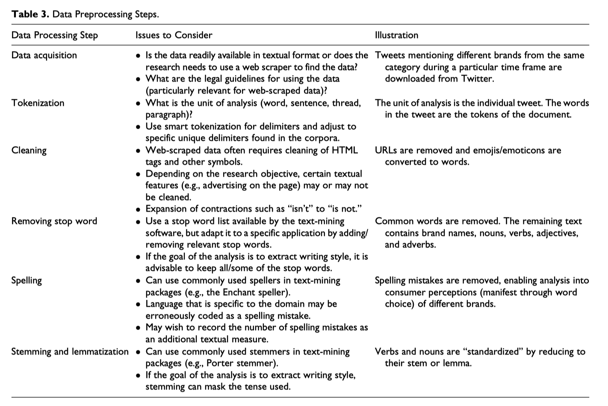

翻译自
Berger, Jonah, Ashlee Humphreys, Stephan Ludwig, Wendy W. Moe, Oded Netzer, and David A. Schweidel. “Uniting the tribes: Using text for marketing insight.” Journal of Marketing (2019): 0022242919873106.
论文作者们的报告视频已上传到B站(下图)，感兴趣的童鞋可以先收藏再收看
Jourmal of Marketing Webinar｜2019市场营销
摘要
语言文字是营销场景中最常用的交互方式，比如在线评论、消费者服务热线、新闻发布、营销传播等活动都创造了有价值的文本数据。但营销研究者如何用好这些数据？本文回顾了文本分析相关研究，并详细介绍了如何用文本数据做市场研究。作者讨论了文本如何反映文本生产者， 文本信息如何影响信息接受者。
接下来，本文讨论了文本如何预测并理解文本背后的信息，回顾了文本分析的方法和测量指标(metrics),提供了一整套的文本分析操作流程。最后，作者提到文本分析内部信度和外部效度问题，研究者如何解决。本文讨论营销各个领域可能存在的研究机会，虽然目前市场营销的研究问题大都是跨学科的，但是营销的各个子领域经常都是孤立，借助文本分析可能架构起连接营销各个子领域的桥梁。
关键词
- 计算语义学coputational linguistics
- 机器学习machine learning
- 市场洞察marketing insight
- 跨学科interdisciplinary
- 自然语言处理natural language processing
- 文本分析text analysis
- 文本挖掘 text mining
无所不在文本
交流沟通是营销的重要组成部分，消费者、企业、消费者投资者、社会，不同水平或者统一水平都有信息交流与沟通。而信息交流的过程中往往会产生或者转化为文本数据。
最简单的的文本数据世界模型是生产者与消费者。模型内生产者和接受者都可能是消费者、企业、投资者和社会。消费者书写在线评论，公司制作会计年报，文化生产者代表社会意义制作出书籍、影片和艺术品（Table 1）
在此情形下，研究者可能选择文本如何反映或如何影响？
- How text reflects its producer？
- How text impacts its receiver？
尤其是文本可以反映一定的信息，这些信息是可以帮助营销人员洞察市场规律，进而利用规律影响文本信息的接受者。

文本反映生产者
首先，文本可以反映了个人的一些信息。例如“在社交媒体某推特上写着某人谈论着上周他们做了什么。”这句话有很多待挖掘的信息，比如他们这些人什么情况，是内向还是外向、神经质还是严肃认真、他们感觉如何、某时刻他们想了什么(Moon and Kamakura 2017)。总之，文本可以看作指纹或签名(Pennebaker 2011)。
通过文本也可以用于理解领导人、机构或者文化精英。例如领导人用词表达会反映出其领导风格，对利益相关方的态度。透过广告、网站或者消费者服务商(consumer service agent)的言语，人们会了解公司的品牌个性(Opoku, Abratt, and Pitt 2006)，公司是如何看待消费者(Packard and Berger 2019a)，管理层对终端用户的定位(Molner, Prabhu, and Yadav 2019)。年报也会有未来业绩表现的有价值线索(Loughran and McDonald 2016)。
除了单独分析个人或组织的言语，也可以对多个内容生产者合并起来进行更大层面的研究。透过人群或组织产生的文本，我们可以更好理解他们的本质。例如，分析微博，可以得出老年人和年轻人之间如何看待幸福(as excitement vs. peacefulness; Mogilner, Kamvar, and Aaker 2011)。消费者们在品牌社区的言语能更深的投射出消费者对品牌的态度(Homburg, Ehm, and Artz 2015)。
而更宏大的层面，文本也能反映出文化差异。如美国人的表达相比东亚人具有更高的唤醒水平(Tsai 2007)，更喜欢用“我”而不是“我们”，也透露着崇尚个人主义，而不是集体主义。
透过时间，研究者也可以监测美国国民情绪是否在911恐怖袭击前后发生变化(Cohn, Mehl, and Pennebaker 2004)。透过新闻报告、歌词等内容也可以帮助研究者了解社会态度和社会规范，分析有关对女性、少数族裔(Boghrati and Berger 2019; Garg et al. 2018)和特定产业态度的时代变迁(Humphreys 2010)。
虽然文本分析并不容易，但企业和组织可以使用社交网络倾听民声。了解消费者是否喜欢新产品，消费者如何看待品牌，消费者最看重什么(Lee and Bradlow 2011; Netzer et al. 2012)。监管机构可以确定什么药物有不良部反映(Feldman et al. 2015; Netzer et al. 2012),公共卫生部门可以提前了解流感今年爆发最严重的地区(Alessa and Faezipour 2018),投资者可以预测股价涨跌 (Bollen, Mao, and Zeng 2011; Tirunillai and Tellis 2012).
文本作用于消费者
文本不止可以反映生产者的信息，也可以知道文本如何影响消费者，消费者会有什么样的行为和选择。广告会塑造消费者的消费行为(Stewart and Furse 1986),报纸用语会改变消费者的态度(Humphreys and LaTour 2013), 消费者杂志会扭曲消费者产品分类感知(e.g., Rosa et al. 1999),电影剧本会影响观众的反应(Berger, Kim, and Meyer 2019; Eliashberg, Hui, and Zhang 2014; Reagan et al. 2016),等等。
需要注意的是文本的反映reflects和影响impacts并不是非此即彼，往往会同时起作用，尽管如此，研究人员倾向于使用文本差异来研究它俩。
当研究文本的reflects时，倾向于将reflects当作因变量，试图挖掘文本生产者的个性personality或属于什么社会团体。
当研究文本的impacts时，倾向于将impacts看作自变量，检验文本是否以及如何导致消费者诸如购买、分享和卷入行为。在本框架中，文本信息潜藏着某些潜在的影响力，是被当作诱因，对后续或者其他主体有作用力的。
文本内容也会被客观条件影响
文本内容还可以被客观条件所塑造，如
- 技术限制和社会文化基因(社会规范)
- 文本信息生产者与消费者之间的领域知识
- 先前客观历史
首先，不同题材因社会规范，表达内容和方式有所不同。例如观点陈述时，新闻不如报告来的客观(Ljung 2000).酒店评论卡和其他反馈主要被极端观点占据。在Snapchat和其他SNS平台的推文达多较短，且昙花一现；而自在线评论经常较长且可以回溯到多年以前。
技术和物理也会改变文本表达。推特只能发少于280字符的推文。移动电话在键入方面受到限制，并且可能会影响人们在其上产生的文本（Melumad，Inman和Pham 2019; Ransbotham，Lurie和Liu 2019）。
其次，信息生产者和消费者之间的关系会影响说什么，怎么说。当生产者和消费者彼此很熟悉，文本表达会更非正式(Goffman 1959)，导致第三方很难通过直接明确的信息了解生产者与消费者之间的对话的态度。
这些因素对于解读文本信息至关重要，消费者给好朋友分享什么往往跟其他不同。企业可能会因为特定的冬季，其年报中可能会含有利好市场的信息。
最后，历史可能也会影响文本的内容。在留言板上，以前的帖子可能会影响以后的帖子；如果有人在先前的帖子中提出了要点，则被访者很可能会在以后的帖子中提及该要点。如果转发的帖子含有自己的分析，其内容会偏离大多数的帖子。更广泛地说，＃metoo或#blacklivesmatter之类的媒体框架可能使某些概念或事实更容易被演讲者使用，因此即使看起来似乎无关，它们也更可能出现在文本中（McCombs&Shaw 1972; Xiong，Cho&Boatwright 2019）。
使用文本预测与理解
文本除了reflects 和 impacts之外，还有predict和understanding。
预测
某些文本研究出发点是做预测
- 什么消费者最喜欢贷款(Netzer, Lemaire, and Herzenstein 2019)?
- 什么电影会大火(Eliashberg et al. 2014)?
- 未来股市走向(Bollen, Mao, and Zeng 2011; Tirunillai and Tellis 2012)?
类似上面的研究，会使用很多文本特征来做机器学习和预测，研究人员不怎么关系任意的文本特质，他们更关心预测的表现。
用文本做预测的主要难点是，文本数据可以生成成千上万的特征(相当于变量x1，x2…xn)，而文本数据记录数甚至可能少于特征数。为了解决这个为题，使用新的特征分类方法，减少特征数量，又有可能存在拟合问题。
理解
预测之外的研究主要是理解文本
- 消费者怎样表达会如何影响口碑(Packard and Berger 2017)?
- 为何某些推文会被挑中分享？
- 歌曲为何变火？
- 品牌如何让消费者忠诚？
理解的目标是理解为什么事情发生以及如何发生的。这类研究往往会用到心理学、社会学的方法，旨在理解文本的什么特征会导致什么后续结果，以及为什么产生这样的后果。
用文本做理解的难点是找出观测数据背后的因果关系。相应的，该领域的工作可能会强调实验数据，以允许对关键的独立变量进行操作。另一个挑战是解释文本特征之间的关系。使用第二人称的歌曲往往较火(Packard and Berger 2019b),但是为什么使用第二人称会火，单纯的文本数据很难挖掘出来作用机制。
在prediction领域，研究人员利用 文本的reflects方面 来预测 生产者的状态、特性、满意度、性格等。研究人员利用 *文本impacts方面 * 来预测 消费者的阅读、分享和购买行为。
在understand领域，研究人员利用 文本的reflects方面 来理解为什么当人们压抑的时候会使用特殊人称。利用 *文本impacts方面 * 来理解为何带有情绪的文本会更容易被阅读和分享。
粘合营销各领域
尽管有reflects vs impacts， prediction vs understanding之分，做文本分析需要整合多种技能·技术和不同营销领域的相关知识。
就拿消费者行为学来说，在行为经济学大放异彩之前，假设情景操纵是存在争议的。实验可重复性问题，研究者开始寻找试图增强信度、效度的新工具。使用二手数据经常受限于只能做“是什么”的研究，不能做“为什么”的研究。但文本数据提供了做为什么的可能。例如在线评论可以用来理解为何某人购买了此商品的决策，尽管人们可能并不总是知道为什么要做某事，但他们的语言常常提供解释的痕迹（Pennebaker 2011），甚至超出了他们有意识地表达的范围。
定量建模人员一直在寻找新的数据源和工具来解释和预测行为。非结构化数据提供了一组丰富的预测变量，这些预测变量通常可以随时大规模获得，并且可以与结构化度量一起作为因变量或自变量组合。通过产品评论，用户驱动的社交媒体活动以及公司驱动的营销活动，文本可以实时提供可以阐明消费者需求/偏好的数据。这提供了对传统营销研究工具的替代或补充。在许多情况下，文本可以追溯到个人，从而可以区分个人差异和动态。
营销策略研究人员希望企业能实现其营销目标，并更好地理解影响组织成功的因素。文本分析提供了一种客观而系统的解决方案，以评估可能更有效的自然数据（例如，致股东的信，新闻稿，专利文本，营销信息，与分析师的电话会议）中可能的因素，如了解客户、合作伙伴和员工关系性质以及品牌情感强度(Kubbler，Colicev和Pauwels2017）使用词典和支持向量机方法来提取情绪并将其与消费者心态指标相关联。
也有学者借鉴人口和社会学领域，使用定性和内容分析研究文本数据。消费者文化领域，研究者对字里行间的意义、规范和价值观更感兴趣。文本分析提供了事物变化或比较不同事物的量化指标。文本分析为营销学者解锁了非结构化数据的开锁姿势，提供了文本的定性与定量研究的新疆界。
文本分析工具、方法和指标
给予前任做的文本数据驱动的洞察，有学者可能好奇如何开启文本研究之路。在本节会评述文本分析相关研究，包括
- 构念如何用文本数据构建
- 将提取的文本信息整合到后续建模和分析中所需的过程
本节目的是提供综合的入门指导，而是把可用的技术路线留给各位
- 讨论各种方法如何恰当的使用
- 各种方法在使用时应该注意什么
文本处理分析包括的步骤有
- 数据预处理
- 文本信息提取
- 常用的文本分析指标
数据预处理
文本数据是非结构化的脏数据。在任何常规数据分析之前，都要先将文本数据预先清洗处理，进而产生出类似excel表的干净的数据。常用的工具有R语言和Python语言，两种编程语言都有一套易用的数据预处理包。使用某些软件，如Linguistic Inquiry and Word Count (LIWC; Tausczik and Pennebaker 2010) 和WordStat (Peladeau 2016)之前，文本数据需要做少量的预处理。预处理可见Table 2和 Table 3 。


1. 数据获取
巧妇难为无米之炊，做文本研究的第一步就是采集数据，文本存在于邮件、公司年报、在线评论之中，无所不在，浩瀚无比。可以用人工手动复制粘贴到excel之中，但是效率太低，我们可以使用python设计网络爬虫采集数据。常见访问库requests、数据解析库pyquery和BeautifulSoup、数据存储库csv。
2. 分词
将文本分词(切词)，数据尺度从章节段落拆解成颗粒度更小的词语层面，方便进行分析。但是要注意，英文是用空格间隔词语，而中文没有空格，还要注意粒度分的不能太细，如“the U. S.”按照空格分词会分出“the”、“U.” 和“S.”，导致美国这个实体被切分消失。
3. 清洗
网络爬虫在采集数据阶段，采集的并不是干净的文本数据，还有一些像HTML标签、图片、链接等字符，需要采集时清除掉。
4. 剔除停止词
文本中有很多经常出现的无意义或者意义微乎其微的词，如"a"、the"、“is” 等。一般情况下，这些词是需要剔除的。但是当研究的是书写者的语言风格，这些无意义词语往往含有千丝万缕的写作习惯信息，所以此时不能剔除。(e.g., Packard, Moore, and McFerran 2018；Pennebaker 2011).
5. 拼写
一般情况下，还需要将错误书写的词正确修改过来。但是当研究者对错误率感兴趣的时候，这时候就不要更正拼写问题。(e.g., Netzer, Lemaire, and Herzenstein 2019).
6. 词干化
词干化是为了将相同或者相近意思的词合并为一个词，如“car” ` “cars” 统一识别为 “car,”
文本信息提取

1. 命名实体抽取
这是文本分析最基础、最简单、最常用的部分。例如姓名、地址、品牌、产品属性、情绪、词性等等都可以看作一种实体信息。实体抽取可以用来
- 监测啥叫媒体讨论，商业竞争情报
- 也可用作机器学习中的特征（预测指标），预测是否是欺诈信息
- 构建更复杂的文本表达方式的度量指标，如情感、情绪、写作风格
这部分一般需要强大的编程语言，如Python和R；当然有些情况下不用编程，使用WordStat也能做实体抽取。大多数情况下实体抽取经常伴随着专业词典或词表的使用，如(概念、品牌、分类、地址等)。通用的词典包括LIWC(Pennebaker et al. 2015)， EL 2.0 (Rocklage, Rucker, and Nordgren 2018), Diction 5.0 或General Inquirer for psychological states and traits (Berger and Milkman [2012]; Ludwig et al. [2013]; Netzer, Lemaire, and Herzenstein [2019]).
情感词典，如Hedonometer (Dodds et al. 2011), VADER (Hutto and Gilbert 2014), 和LIWC能计算出文本中含有的情感信息。情感分析经常使用词袋法（Bag of Words）计算文本中的情感。但是该方法不考虑词语在文本中的顺序，而顺序是能影响情感信息的。尽管词典法对构建构念和比较构念比较简单，但基于人工编码的机器学习方法(e.g.,Borah and Tellis 2016; Hartmann et al. 2018; Hennig-Thurau, Wiertz, and Feldhaus 2015)更适合做精准概念的度量(Hartmannetal.2019)，尤其是这个领域是不常见或者比较复杂。
如果研究者想挖掘出实体之间的关系就用到word2vec或者词嵌入word embedding (Mikolov et al. 2013)，这两种方法都把每一个词分配一个长度固定的向量，我们知道向量可以在空间中比较，如cos余弦计算词语之间的相似度。
2. 话题模型
实体抽取有两个大问题:
- 维度太高，经常能从文本数据中抽取出数千个实体
- 实体的解读与解释
话题模型更多的是对文本的解释，而非预测(e.g., Berger and Packard 2018; Tirunillai and Tellis 2014)。话题模型最常见的是LDA，某个词以一定的概率属于话题，文本以多种话题按照一定的概率分布。
LDA是无监督学习，需要事先指定话题数，输出的结果是不同的类分布，需要研究者解读每一个话题到底是什么题材内容。话题区间范围一般建议结合统计分布和研究者经验确定话题数目。
3. 关系抽取
关系抽取可以用实体共现性来捕捉(e.g., Boghrati and Berger 2019; Netzer et al. 2012; Toubia and Netzer 2017).但营销学者对诸如产品、属性和情感之间的关系感兴趣。例如，研究者对评论中是否提及某个产品属性的问题。Feldman et al. (2015) and Netzer et al. (2012) 提供了药物与不良反应之间的关系来识别问题药物。
关系抽取用的实现大多思路不难，多是一些人工规则的设计，如产品“Ford”、属性“oid consumption”和问题“excessive”共现性来捕捉福特车耗油。然而这样的方法需要手写复杂的规则，现在变得慢慢不流行。
更通用的方法是机器学习法，人工标注相关的数据，训练机器学习模型。这类实现方法需要大量的人工标注，一种可用的工具是Stanford Sentence and Grammatical Dependency Parser (http://nlp.stanford.edu:8080/parser/) 。该工具可以识别词语依存关系，如“the hotel was very nice,” ，“nice” 与 “hotel”相关联，说明这个hotel挺nice的。
当然，也可以扩文本之间做比较，这里不过多赘述。
文本分析指标
早起市场营销，如在线评论领域的文本分析指标多为
- 数量(e.g., Godes and Mayzlin 2004; Moe and Trusov2011)
- 效价，评论评分t (e.g., Godes and Silva 2012; Moe and Schweidel 2012; Ying, Feinberg and Wedel 2006)·
- 方差，如信息墒(e.g., Godes and Mayzlin 2004).
然而如今这些指标经常忽略了文本的丰富度。以下几种是更好用的指标
1. count measure
使用相应的词典，统计实体出现次数，这样可以对不同实体进行比较(Berger and Milkman 2012; Borah and Tellis 2016; Pennebaker et al. 2015; Schweidel and Moe 2014; Tirunillai and Tellis 2014)。缺点是更长的文本通常含有更多的实体(的数量)，还有一个局限就是某些实体会比其他实体更多的出现，如“电脑”商品的在线评论中“电脑”出现次数会远多于其他词。
2. 相似度
在某些情况下，研究者更对文档之间的相似度感兴趣(e.g., Ludwig et al. 2013).。两个广告之间的相似程度如何？两首歌的歌词相似程度多少？相似度的计算方法有cos余弦相似、jaccard相似 (e.g., Toubia and Netzer 2017)
3. 可读性
同样的意思可以用不同的难度的词汇去表达，造成阅读的难易程度。可读性反映了作者的内容复杂度和读者的阅读难度。(e.g., Ghose and Ipeirotis 2011)。
常见的可读性算法有Flesch–Kincaid和the simple measure of gobbledygook (SMOG)。可阅读性经常将得分设置到1-12分之间，在美国学校里阅读理解成绩水平得分就是1-12分。
未来营销研究新机会
1. 借鉴融合
文本分析在营销界中可以起到促进各个子领域交叉授粉，避免同质化学术繁殖。品牌社群是最早被来自社会学背景的研究者发现和研究的(Mun˜iz and O’Guinn 2001)。随后，定性和定量范式研究者逐渐界定了概念、识别了社群中的地位和作用(e.g., Mathwick, Wiertz, and De Ruyter 2007)。文本分析可以让学者研究如何在更大尺度层面去量化社群中的消费者沟通行为。例如，社群中不同权利地位的人使用的语言是否存在差异，使用不同动态指标预测社群产出情况(e.g., Manchanda, Packard, and Pattabhitamaiah 2015)。研究人员也可以追踪到底哪类用户发明新用语，又是哪些人跟随使用这些新用语。研究可以检查人们是否随着时间的开始使用社群语言，并根据他们对群体语言的适应程度来预测哪些人可能会留下或离开(Danescu-Niculescu-Mizil et al. 2013; Srivastava and Goldberg 2017)。定量或机器学习的研究人员可能会发现社群中最常讨论的主题，以及这些主题如何随着社群的发展而动态变化。阐述性范式的研究人员可能会研究这些话语在概念上如何关联，以找到是哪些潜在社区准则促成成员留下。然后，营销战略领域的研究人员可能会使用或开发词典来将这些社区与公司绩效联系起来，并为公司提供有关如何保持不同品牌社区（或环境）成员参与度的指导。
不同子领域的营销学者会使用不同的技能集，研究不同的文本传播类型。消费者与消费者(consumer-to-consumer)之间的沟通主要研究的是两者间的行为，而营销战略学者倾向于研究企业与消费者、企业与企业之间的沟通。不同营销子领域的学者间的合作，能帮助他们结合不同的文本数据源。
它山之石可以攻玉，例如营销战略学者借鉴经济学领域的交易理论(代理理论)来研究企业间的关系，但现在营销战略相关发现可以用于研究消费者之间的沟通行为。
2. 扩展文本领域研究
我们希望看到更多的消费者-企业间的沟通的研究(e.g., Packard and Berger 2019a; Packard, Moore, and McFerran 2018)，这些沟通经常都是非约束非的，这其中蕴涵着有价值的关系数据，可以有很多应用价值。
而在企业间沟通方面，大多数侧重于沟通(Communication)的角色(e.g., Palmatier, Dant, and Grewal 2007)。然而在文本数据上，在词语层面上，有相关研究很少。例如很少有研究销售人员与消费者之间的信息交换类型。
类似的，在会计金融领域有很多人采用年报作为数据源(for a review, see Loughran and McDonald [2016])，但营销学者很少注意到公司与投资者之间的存在的研究机会。大多数学者只是用来研究如何预测公司股价或者开发新的公司市值估值模型。鉴于最近有兴趣将营销相关活动与公司估值联系起来（例如McCarthy和Fader 2018），这可能是一个需要进一步追求的领域。公司的所有沟通，包括年度报告等必需的文件，或广告和销售互动等任意形式的沟通，都可以用做观测变量，例如市场定位，营销能力，营销领导风格，甚至公司的品牌个性。
在消费者、企业、社会之间也存在着大量的研究机会。有关企业文化(规范)的数据，例如新闻媒体和政府报告，可能有助于阐明影响市场的力量。例如，要了解Uber这样的公司如何抵抗市场变化，可以研究市政厅会议的笔录和其他听取并回答市民意见的政府文件。诸如#metoo和#blacklivesmatter之类的社会运动形式的外来冲击影响了营销传播和品牌形象。未来研究的一种潜在途径是采用文化品牌化方法（Holt，2016年），研究不同公众如何定义，塑造和倡导市场中的特定含义。公司及其品牌并不是凭空存在的，它们独立于其经营所在的社会。但是，在市场营销方面的有限研究已经考虑了如何使用文本在社会层面上得出公司的意图和行为。例如，学者们展示了诸如locavores（这类人只食用当地产的食品；Thompson和Coskuner-Balli，2007年），时尚达人（Scaraboto和Fischer，2012年）以及博主（McQuarrie，Miller和Phillips，2012年），这几类人群塑造了市场。通过文本分析，可以衡量和更好地理解这些社会群体的意图对市场的影响。
未来研究的另一个机会是使用文本数据来研究文化和文化成功。跨学科研究了文化传播，艺术变革和创新传播等主题，目的是理解某些产品为何成功而其他产品却失败的原因(Bass 1969; Boyd and Richerson 1986; Cavalli-Sforza and Feldman 1981; Rogers 1995; Salganik, Dodds, and Watts 2006; Simonton 1980). While success may be random (Bielby and Bielby 1994; Hirsch 1972),可能的原因是没把握好消费者的口味偏好 (Berger and Heath 2005)。
通过在大范围更快速度地量化书籍、电影或其他文化物品，研究人员可以测量具体的叙事是否更具吸引力，更具情感波动性的电影是否更成功，使用某些语言特征的歌曲是否更有可能登上广告牌榜首 ，以及唤起特定情感的书籍是否售出更多。尽管没有像社交媒体数据那样广泛可用，但最近越来越多的文化项目数据可用。诸如Google Books语料库（Akpinar&Berger 2015），歌曲歌词网站或电影脚本数据库等数据集可提供大量信息。此类数据可以使叙事结构分析，以识别"基本情节"'(Reagan et al 2016; Van Laer et al2019）。
3. 用文本测量关键构念
在个体层面上，情感和满意度可能是最常用的测量变量(e.g., Bu¨schken and Allenby, 2016; Homburg, Ehm, and Artz 2015; Herhausen et al. 2019; Ma, Baohung, and Kekre 2015; Schweidel and Moe 2014)其他从文本数据中提取的测量变量包括语言的真实性authenticity和情绪性emotion(e.g., Mogilner, Kamvar, and Aaker 2011; Van Laer et al. 2019)。也有心理学测量变量，如性格类型presonality type和建构水平construal level(Kern et al. 2016; Snefjella and Kuperman 2015),这都是潜在的可以借鉴应用到消费者话语研究的。
未来个体层面的研究会考虑社会认同和社会参与度， 研究人员目前对消费者已经可以测量情绪的积极或消极，但他们才刚刚开始探索重点（Rocklage&Fazio 2015），信任，承诺和其他模式属性。为此，利用语用学的语言理论并研究语义学上的阶段性可能是有用的（Villarroel et al2017）。一旦开展了此类工作，我们建议研究人员仔细验证建议的方法，以按照上述方法测量此类构念。
在公司层面，已在公司生产的文本（例如年度报告和新闻稿）中确定了一些构念。诸如市场定位、广告目标、未来定位、欺骗意图、公司重点和创新定位均已使用此材料进行了测量和验证（详见Web Appendix Table 1)。未来企业层面的营销研究需要重新界定和丰富战略定位的测量(创新定位、市场驱动vs市场驱动定位)。组织文化、结构和能力由于难于测量，可以从企业、雇员和外部利益相关者的文本数据来测量(see Molner, Prabhu, and Yadav [2019])。类似的，企业领导层的思维和管理风格可以从他们怎么说来侦测(see Yadav, Prabhu, and Chandy [2007])。公司的绩效指标可以通过之前的公司相关文本数据进行预测(e.g., Herhausen et al. 2019)。从这个角度看，我们有很多使用数据的新机会。例如，从企业内部员工的相关信息(LinkedIn 和 Glassdoor)可以测量基于员工的品牌价值。最后，企业语言的更多微妙属性，如冲突、歧义、开放性都可以为管理学增加新发现。再比如，使用一些非正式文本数据，如员工邮件记录、销售通话记录或消费者服务中心通话记录。
营销工作较少在社会或文化层面上衡量结构，但这种工作趋向于集中于公司如何适应现有意义和规范的文化结构。例如，制度逻辑和合法性是通过分析媒体文本来衡量的，Berger等人的品牌公众崛起也增加了文化中对品牌的讨论（Arvidsson and Caliandro 2016）。在文化层面，营销研究可能会继续关注企业如何适应文化环境，但也可能会关注文化环境如何影响消费者。例如，对文化不确定性，风险，敌意和变化的测量可以理解文化对消费者和企业影响。通过文本衡量开放性和多样性也是适时探索的主题，并且可能会促进测量方面的创新，例如侧重于语言多样性。通过文本分析，也可以更好地理解重要的文化论述，例如围绕债务和信用的语言。与性别和种族有关的语言的测量可能有助于探索多样性和包容性，从而使公司和消费者对来自不同作家的文本做出反应。
机遇与挑战
本节是从技术角度出发探讨文本分析方法的新机遇与挑战。
1. 机遇
虽然我们的讨论集中于文本内容，但文本只是非结构化数据的一个示例，而音频，视频和图像则是其他示例。社交媒体帖子通常将文字与图片或视频结合在一起。平面广告通常会在精心构造的视觉效果上覆盖文字。尽管电视广告可能不会在屏幕上包含文本，但它可能具有音频轨道，其中包含与视频同步进行的文本。
直到最近，文本数据一直受到最多关注，这主要是由于存在提取有意义特征的工具。也就是说，诸如Praat（Boersma 2001）之类的工具允许研究人员从音频中提取信息（Van Zant和Berger 2019）。音频数据相对于文本数据的优势之一是，它以音调和语音标记的形式提供了丰富的内容，可以添加到所表达的实际单词中（Xiao，Kim和Ding 2013）。这使研究人员不仅可以研究说的内容，还可以研究说的方式，检查音调，语气以及其他声音或副语言特征如何塑造行为。
同样，最近的研究开发了分析图像的方法（Liu，Xuan等人2018），既可以表征图像的内容，也可以识别图像中的特征。文本和图像组合的影响的研究很少（例如Hartmann等人2019）。例如，可以根据图像的颜色来描述图像。在印刷广告的上下文中，当与特定调色板的图像结合使用时，文本内容的说服力可能会降低，而其他调色板可能会增强文本的说服力。与简单的图像结合使用，文本的重要性可能会非常明显。但是，当文本与复杂的图像配对时，观看者可能会主要关注图像，从而减少了文本的影响。在这种情况下，作为广告精美图片一部分的法律披露可能不会引起受众的注意。
当文本加到视频中时，其扮演的角色也引发了类似的问题。研究已经提出了表征视频内容的方法（例如Liu等人2018）。除了包含视频脚本之外，文本还可能在视觉上出现。除了在其中显示文本的音频上下文之外，其影响可能还取决于同时显示的视觉效果。也可能是其在视频中相对于视频开头的位置可能会降低其效果。例如，由于多种原因，在视频中稍后说出的情感性文字内容可能缺乏说服力（例如，观众在讲出文字时可能已经不再注意了）。或者，与音频配对的视觉效果可能对观众更具吸引力，或者视频的先前内容可能耗尽了观众的注意力资源。正如我们对图像和视频的讨论所暗示的那样，文本只是营销传播的一个组成部分。未来的研究必须调查其与其他特征的相互作用，不仅包括其出现的内容，还包括其出现的时间（Kanuri，Chen和Sridhar 2018），以及在哪种媒体上。
2. 挑战
尽管机会众多，但文本数据也带来了各种挑战。首先是面临可解释性的挑战。在某些方面，文本分析似乎提供了衡量行为过程的更客观的方法。例如，一个人可以计算第一人称“ I”和第二人称“ you”。第一人称在文本中越多，说明这个人更关心自己 （Berger 2014），这种量化词语数量的方法提供看起来更像很客观像真理的东西。但是，尽管该过程的一部分肯定是更客观的（例如，不同类型的代词的数量），但此类度量与基础过程（即，关于口碑传播者的说法）之间的联系仍然需要一定程度的解释。其他潜在的行为方式甚至更难以计数。例如，虽然某些词（例如“love”）通常是积极的，但它们的积极性可能在很大程度上取决于特质个体差异和上下文。
更普遍地，在理解文本信息出现的上下文中存在挑战和机遇。例如，餐厅评论可能包含很多否定词，但这是否意味着该人更讨厌食物，服务或餐厅？包含更多第二人称代词（“ you”）的歌曲可能会更成功（Packard and Berger 2019b），但要了解原因，了解歌词是否使用“ you”作为句子的主语或宾语是有帮助的。上下文提供了含义，而且越多的人不仅了解正在使用的单词，而且还了解如何使用它们，则越容易获得新知识新洞察。基于词典工具特别容易对使用场景变化特别敏感，建议尽可能使用针对特定研究环境创建的词典（例如，Loughran和McDonald [2016]开发的财务情感工具）。
数据隐私挑战是一个重大问题。研究通常使用从网站上抓取的在线产品评论和销售排名数据（Wang，Mai和Chiang 2013）或从社交媒体平台上抓取的消费者的活动数据（Godes和Mayzlin 2004；Tirunillai和Tellis 2012）。尽管这种方法很普遍，但是法律问题已经开始出现。LinkedIn未能成功阻止一家初创公司抓取用户公共资料中发布的数据（Rodriguez，2017）。虽然根据法律可能允许收集公共数据，但它可能与那些拥有研究人员感兴趣的数据的平台的服务条款相冲突。
随着从数字化文本和其他形式的数字化内容（例如图像，视频）中提取见解的兴趣日益浓厚，研究人员应确保他们已获得进行工作的适当权限。不这样做可能导致开展此类项目变得更加困难。一种潜在的解决方案是创建一个学术数据集，例如Yelp提供的数据集（https://www.yelp.com/dataset），该数据集可能包含过时或经过清理的数据，以确保不会产生 公司的运营或用户隐私风险。
对数字化文本以及其他用户创建的内容的收集和分析，也引发了有关用户对隐私的期望的问题。随着欧盟《通用数据保护条例》的发布以及有关Cambridge Analytica从Facebook收集用户数据的能力的启示，研究人员必须注意其工作的潜在滥用。我们还应考虑超出用户生成内容的预期用途的程度。例如，尽管用户可能会理解，Facebook采取的行动可能会导致他们针对与其互动的品牌进行专门的广告宣传，但他们可能无法预期其Facebook和Instagram活动的全部内容都将被用于构建其他品牌可能使用的心理特征。了解消费者关于其在线行为及其提供的文字的隐私偏好可以为从业者和研究人员提供重要的指导。未来研究的另一个亮点是可以提高营销的精确度，同时最大限度地减少对隐私的侵犯（Provost et al 2009）。
总结
沟通是营销的重要方面，涵盖组织与合作伙伴之间，企业与消费者之间以及消费者之间的沟通。文本数据包含这些交流的详细信息，并且通过自动文本分析，研究人员已准备好将这种原始材料转换成有价值的见解。文本数据使用方面的许多最新进展是在营销之外的领域开发的。当我们展望未来和营销人员的角色时，这些最新进展应作为示例。营销人员在消费者，公司和组织之间的接口上处于有利位置，可以利用和改进工具来提取文本信息，以解决当今企业和社会所面临的一些关键问题，例如错误的信息滥用。营销提供了一种宝贵的观点，对这次对话至关重要，但这只有通过更广阔的视野，打破理论和方法论的孤岛，并与其他学科合作，我们的研究才能吸引尽可能多的受众来影响公众话语。我们希望这个框架能够鼓励人们对界定营销的界限进行反思，并为未来的突破性见解开辟道路。